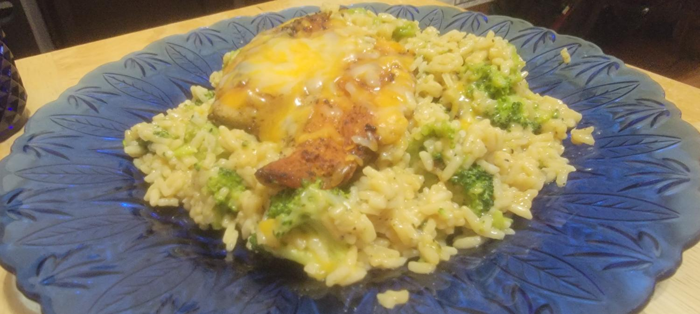
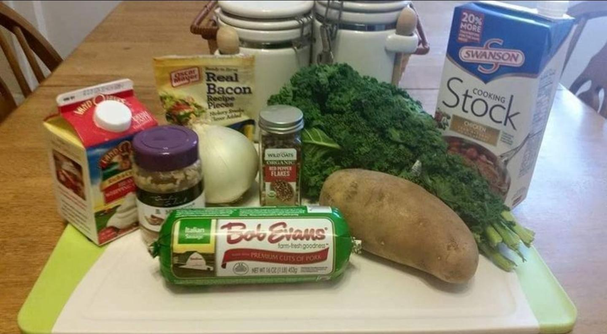

House brand. Not a dump of internet casseroles. One free door. The rest is the kitchen.
SoulJere's Cheesy Chicken & Rice Skillet

Chicken, broccoli rice, Colby Jack.
In the pan
Method
SoulJere's Zuppa Toscana
Kale still green. Potato tender. Sausage in the cream.

Board as shot. Two russets for this yield.
In the pot
Method
House rules
A cook is locked after it hits a real stove and you would serve it again without a speech.
Toggles stay. Options rewrite the list. They do not hide the default.
Instant rice ≠ long-grain bake. Different method. Label it.
Fond stays. You do not wash the pan between sear and sauce.
165°F on chicken. Guessing is not a method.
Seasoning replaces salt on the skillet meat. Do not stack.
Kale does not keep. Size the pot to the days you will eat it.
Leftovers
Written for a home stove. Same bones as a food-service class. No certificate required.
The clock
Cool it like you mean it
A deep stockpot in the fridge stays warm in the middle for hours.
- Lid loose until steam drops, then seal.
- Label the date. Day 1 is cook day.
How long
Quality dies before safety sometimes. If you are guessing, it goes in the can. Do not taste to decide.
Reheat
- Soups and gravies: bring to a boil.
- Microwave: cover, stir, stand, check the center.
- Do not reheat in a slow cooker.
- Back in the fridge within 2 hours of that reheat.
These two pots
Zuppa: 3–4 days safety. Eat by day 3 if you care about the kale. Cream can split in the freezer; whisk it back. Boil the ladle you serve.
Price
Love is the plate. The app is the method. Luke 10:7 still applies when it smells like dinner.
The skillet
Full cook, hard rules, broccoli toggle preview. Never paywalled later.
SoulJere's Kitchen unlock: every locked recipe at purchase, all toggles, pantry notes, don't pages. One buy covers the household. No subscription.
Do not sell until 3–5 dishes are locked. Two is a start. It is not a store yet.
Updates
- Fixes to a recipe they already own — free.
- New toggle on an existing dish — free.
- New recipe — not free. Pack of 3 = $4. Single extra = $3.